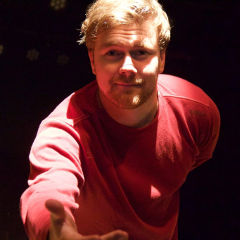
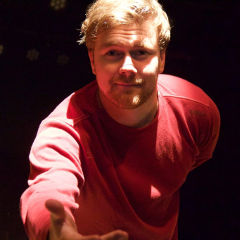
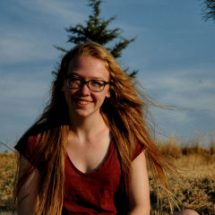
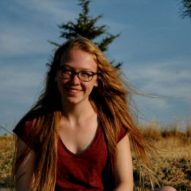
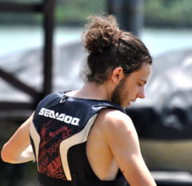
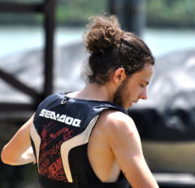

OVER ONS
Oorsprong:
La Mouche Rouge is ontstaan wanneer twee jonge meisjes enkele jaren terug hun droom lieten uitkomen door helemaal zelf een theaterstuk in elkaar te steken. Sindsdien willen we jongeren met een podiumdroom de kans geven om te ontdekken hoe je zo'n project werkelijk realiseert. La Mouche Rouge wil een steunpunt zijn voor jongeren die verder willen met hun theaterambitie.
Focus:
Leren organiseren is een belangrijke focus die ons onderscheidt van andere theatergezelschappen. We focussen niet alleen op het eindresultaat. De weg er naartoe staat centraal. Daarom staan onze jongeren niet alleen als acteur op podium, maar leren ze ook alle dingen die zich ter voorbereiding of achter de schermen afspelen.
Natuurlijk hoef je niet perse een rugzak vol theaterkennis te dragen vooraleer je bij ons van start kan. Zonder ervaring kan je je voor de eerste keer volledig laten onderdompelen in het theaterwereldje en al doende de theaterkriebels ontdekken. Let wel, anders als bij andere amateurtheatergroepen is leren theater spelen niet onze belangrijkste focus. Natuurlijk word je niet aan je lot overgelaten. Om het individueel proces van iedereen voldoende aandacht te geven zorgen we wel dat het aantal ‘onervaren’ deelnemers beperkt blijft.
Experiment:
Naast het leren organiseren, maakt La Mouche Rouge graag ruimte voor experiment. We zoeken graag de grenzen tussen theater en het absurde op. We gaan soms interdisciplinair te werk. Dan zoeken we naar combinaties met andere kunstvormen: samenwerken met een muziekband, een video vertonen of dansen in de voorstelling, is niet vreemd voor ons. Daarnaast kan er ook geëxperimenteerd worden met materialen, de locatie en het publiek. Kortom is klassiek theater niet ons doel.
Geïnteresseerd?
Stuur dan zeker een mailtje naar theater.lamoucherouge@gmail.com.
 

 

 
